Objetivos de la práctica
Trabajar con recursos desplegados físicamente en dos regiones diferentes.
Crear instancias Amazon Linux de tipo t3.micro.
Administrar remotamente las máquinas mediante autenticación con clave privada.
Comprobar cómo AWS filtra el tráfico entrante según protocolo y reglas.
Permitir explícitamente el tráfico necesario para utilizar ping.
Comparar experimentalmente el tiempo de respuesta entre ambas regiones.
Arquitectura del laboratorio
52.90.243.10
35.94.230.245
Despliegue en Norte de Virginia
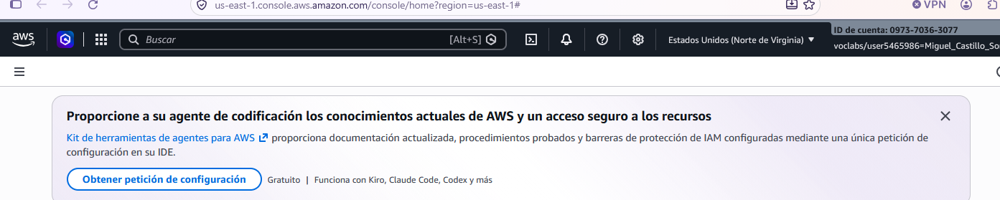
Selección de Norte de Virginia como primera región del laboratorio.
Configuración de EC2-Virginia
Se desplegó una instancia Amazon Linux utilizando una configuración ligera apropiada para el laboratorio.
| Parámetro | Configuración |
|---|---|
| Nombre | EC2-Virginia |
| AMI | Amazon Linux 2023 |
| Tipo | t3.micro |
| Clave | vockey |
| SSH | 0.0.0.0/0 |
| Almacenamiento | 8 GiB |
| Tipo de volumen | gp3 |
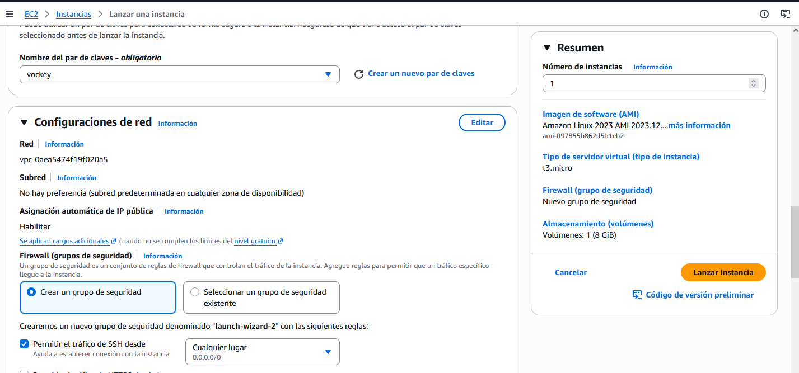
Amazon Linux, t3.micro, clave vockey, SSH y almacenamiento gp3.
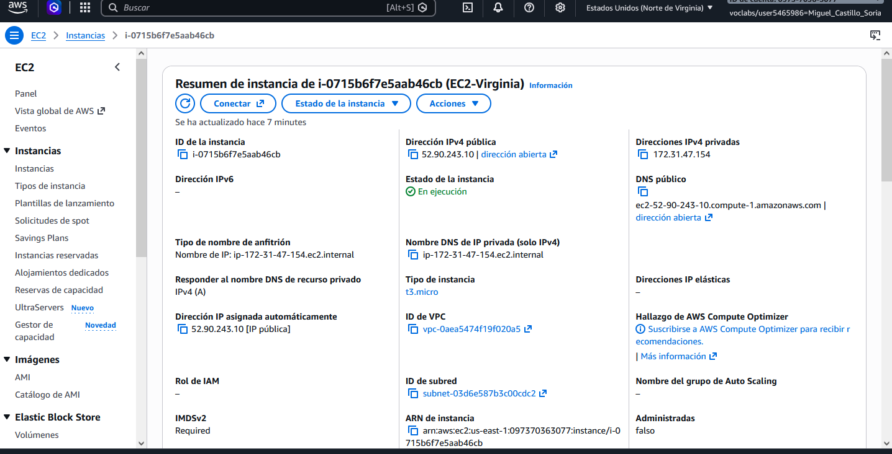
EC2-Virginia operativa con dirección IPv4 pública 52.90.243.10.
Conexión SSH y problema de permisos
Para administrar la instancia se utilizó SSH desde Windows PowerShell mediante una clave privada PEM.
aunque la instancia AWS estaba asociada al par de claves
vockey, AWS Academy proporcionó para la descarga una clave
privada denominada labsuser(1).pem.
Al intentar utilizarla, OpenSSH rechazó inicialmente el fichero mostrando el aviso:
El problema se debía a que otros usuarios/grupos de Windows tenían permisos sobre la clave privada.
Corrección realizada
Una vez restringidos los permisos se realizó correctamente la conexión:
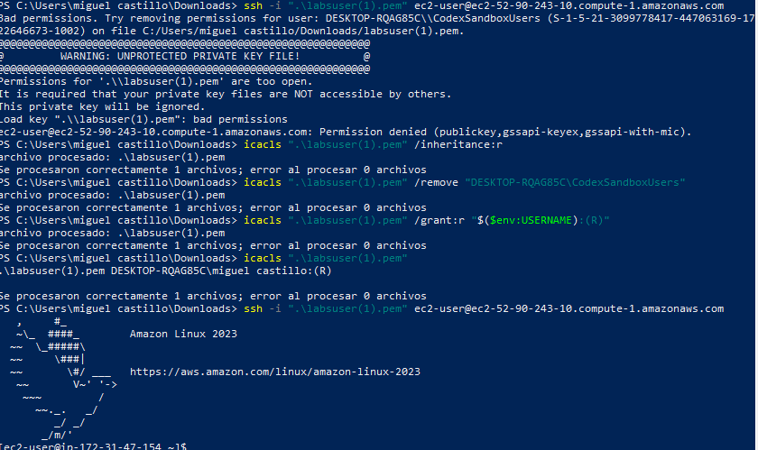
La evidencia muestra tanto la incidencia con los permisos como su corrección y el acceso final a Amazon Linux 2023.
🎓 EXAM MODE — Claves privadas
Una clave privada SSH debe permanecer protegida. Si OpenSSH detecta que otros usuarios pueden acceder al fichero privado puede negarse a utilizarlo.
Idea para recordar:Despliegue en Oregón
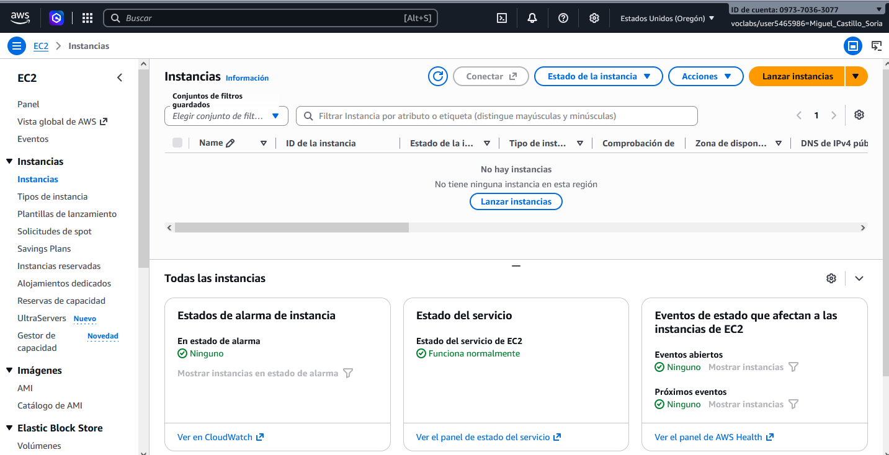
Cambio desde Norte de Virginia hasta la región de Oregón.
En Oregón se creó una segunda instancia con características similares, pero utilizando un nuevo par de claves.
| Parámetro | Configuración |
|---|---|
| Nombre | EC2-Oregon |
| AMI | Amazon Linux |
| Tipo | t3.micro |
| Clave | mcs-oregon |
| Formato | .pem |
| SSH | 0.0.0.0/0 |
| Almacenamiento | 8 GiB gp3 |
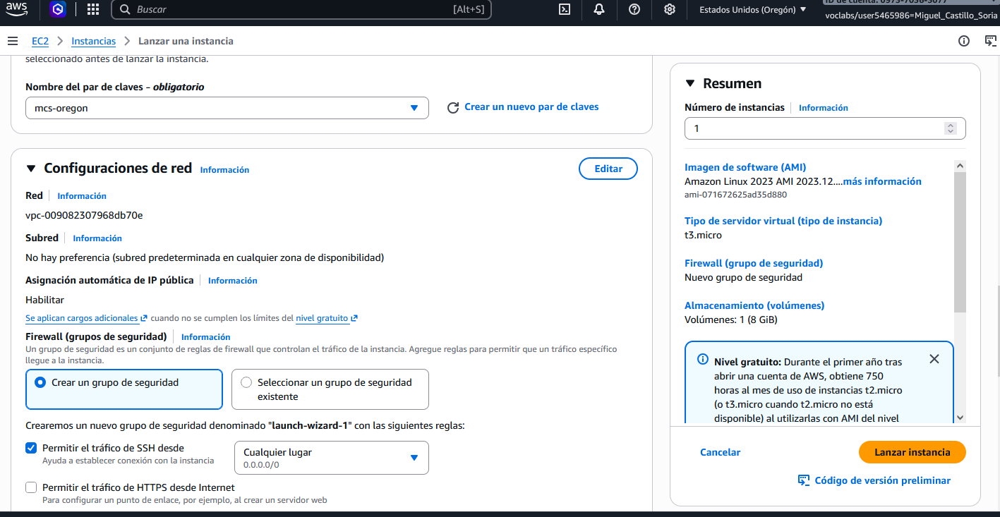
Segunda instancia del laboratorio y nuevo par de claves mcs-oregon.
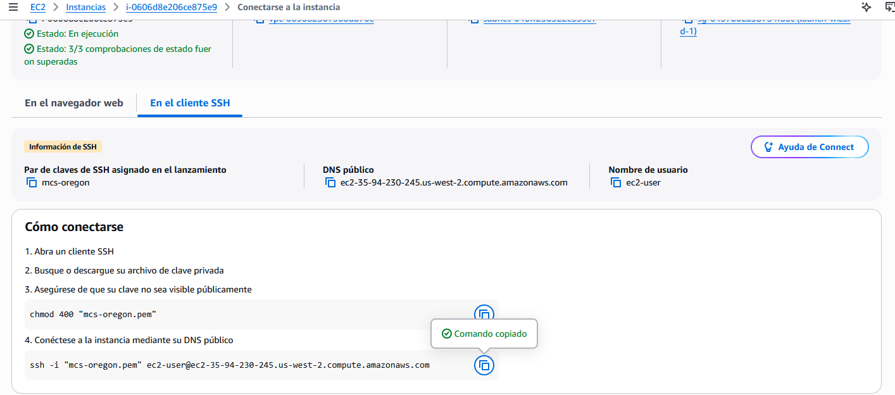
AWS muestra el usuario ec2-user, la clave
mcs-oregon y el DNS público de la instancia.
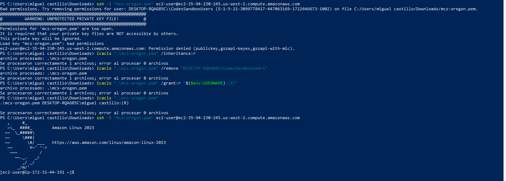
Acceso remoto satisfactorio a la segunda instancia Amazon Linux.
Security Groups e ICMP
Las instancias aceptaban conexiones SSH, pero inicialmente no respondían
a ping.
🎓 EXAM MODE — SSH no es PING
Este es uno de los conceptos más importantes de la actividad.
Por tanto, tener acceso SSH a una instancia no significa que ésta tenga que responder a ping.
Prueba en Virginia
Antes de permitir ICMP el resultado fue:
Se añadió posteriormente una regla de entrada:
| Tipo | Origen | CIDR |
|---|---|---|
| Todos los ICMP - IPv4 | Cualquier lugar IPv4 | 0.0.0.0/0 |
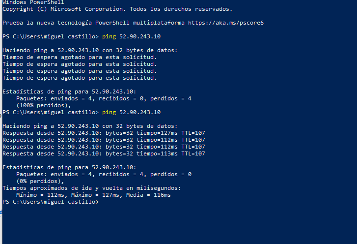
Una única evidencia permite comprobar el ping bloqueado inicialmente y las respuestas obtenidas después de habilitar ICMP.
Security Group configurado para permitir tráfico ICMP IPv4.
Prueba en Oregón
Se repitió exactamente el mismo procedimiento sobre la segunda instancia.
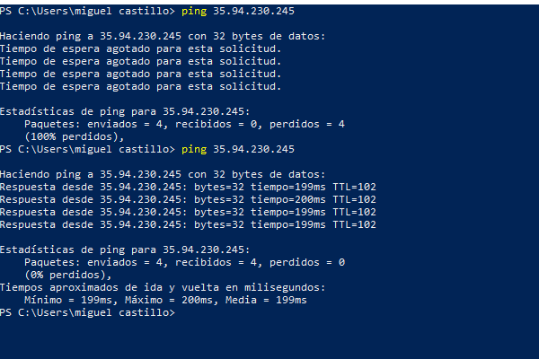
Comparación del comportamiento del ping antes y después de permitir ICMP.
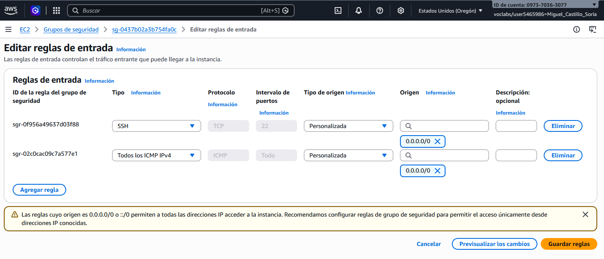
Regla de entrada ICMP IPv4 aplicada al Security Group.
0.0.0.0/0 representa cualquier dirección IPv4.
En esta actividad se utiliza porque forma parte de la configuración del
laboratorio. En un entorno real conviene limitar el origen siempre que
sea posible.
Comparativa de latencia
| Región | IP | Mín. | Máx. | Media | Pérdida |
|---|---|---|---|---|---|
| Virginia | 52.90.243.10 | 112 ms | 113 ms | 112 ms | 25 % |
| Oregón | 35.94.230.245 | 199 ms | 200 ms | 199 ms | 0 % |
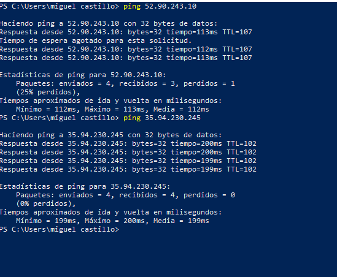
Resultados obtenidos desde el mismo equipo contra las dos direcciones IPv4 públicas.
En esta prueba concreta, Virginia respondió aproximadamente 87 ms más rápido de media.
Finalización de recursos
Una vez terminadas las pruebas se eliminaron las instancias EC2 utilizadas durante el laboratorio.
Detener una instancia permite volver a iniciarla posteriormente. Terminar una instancia supone eliminarla definitivamente. En esta actividad corresponde terminar las instancias.
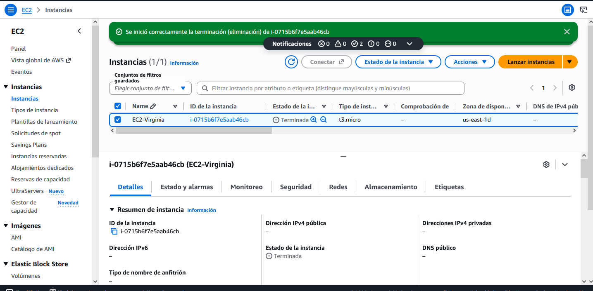
El recurso de Norte de Virginia queda eliminado al finalizar las pruebas.
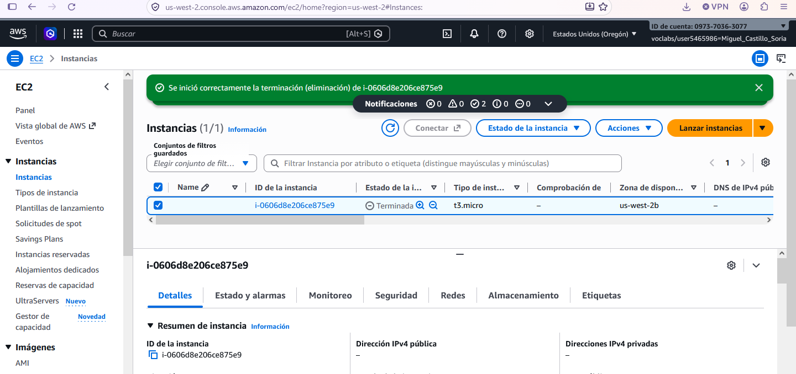
Finalización de la segunda instancia y cierre del laboratorio.
Resumen técnico
Selección de us-east-1 y despliegue de EC2-Virginia.
Resolución del problema de permisos de la clave PEM y conexión correcta.
Selección de us-west-2 y creación de EC2-Oregon con una nueva clave.
Comprobación de que SSH permitido no implica ICMP permitido.
Habilitación de ping mediante una regla de entrada específica.
Virginia: 112 ms de media. Oregón: 199 ms.
Terminación de las dos instancias EC2.
Lo que hay que recordar
🎓 Puntos clave para examen
1. Una región AWS es una ubicación geográfica donde AWS dispone de infraestructura.
2. EC2 proporciona servidores virtuales o instancias en la nube.
3. Una AMI es la imagen utilizada como base para crear una instancia EC2.
4. SSH permite administrar remotamente sistemas y normalmente utiliza TCP/22.
5. Los Security Groups controlan el tráfico permitido hacia y desde recursos como EC2.
6. Ping utiliza ICMP, no SSH ni TCP/22.
7. Permitir SSH no significa permitir ping.
8. 0.0.0.0/0 significa cualquier dirección IPv4.
9. Una clave privada SSH debe tener permisos restrictivos.
10. La región elegida puede afectar a la latencia.
11. Detener una EC2 y terminarla son operaciones diferentes.
Actividad completada
Se han desplegado dos instancias EC2 en regiones diferentes, establecido conexiones SSH, solucionado un problema real de permisos sobre claves privadas, configurado ICMP mediante Security Groups, medido la latencia y eliminado finalmente los recursos utilizados.
Virginia: 112 ms de media
Oregón: 199 ms de media
Diferencia observada: 87 ms